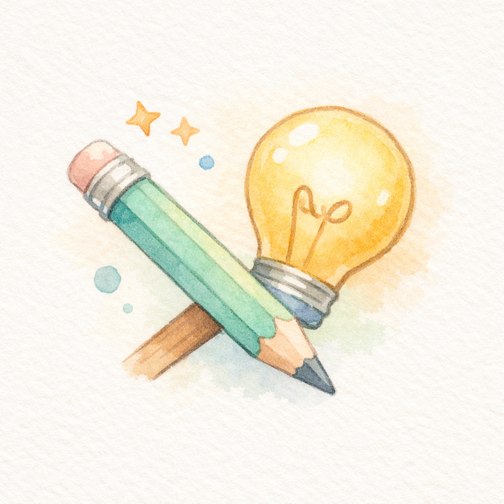
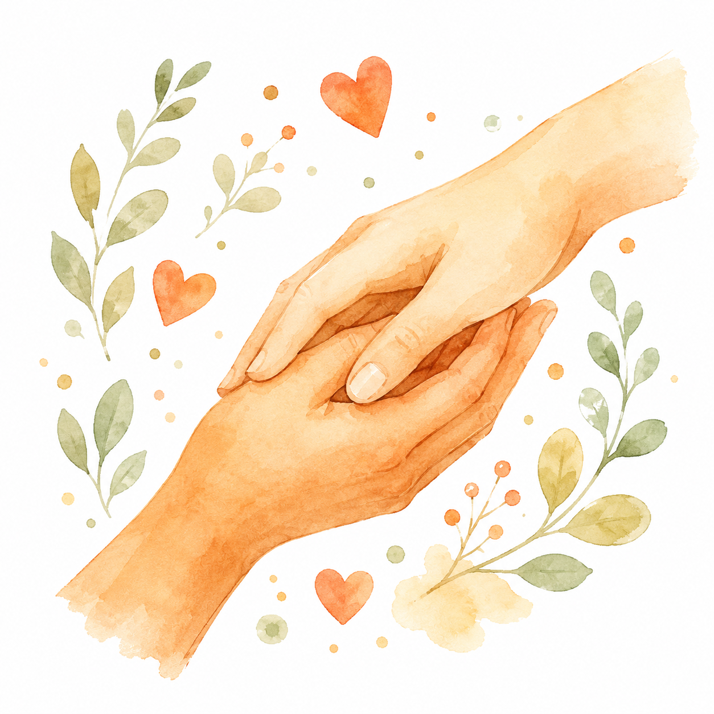
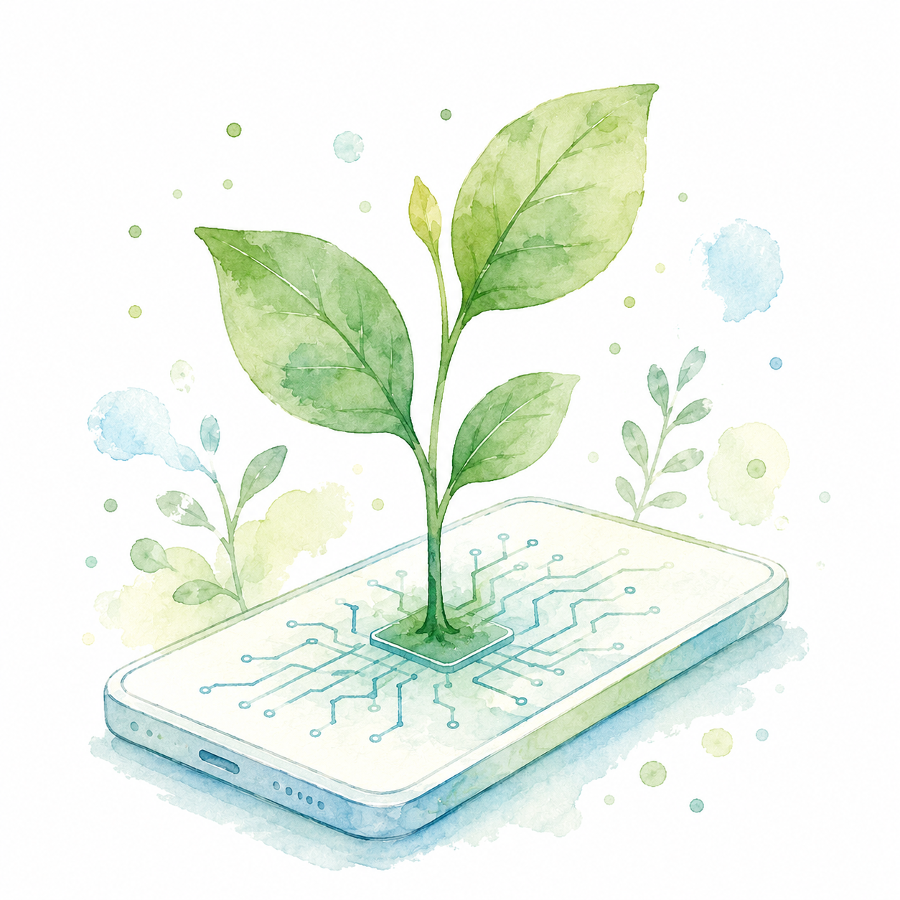
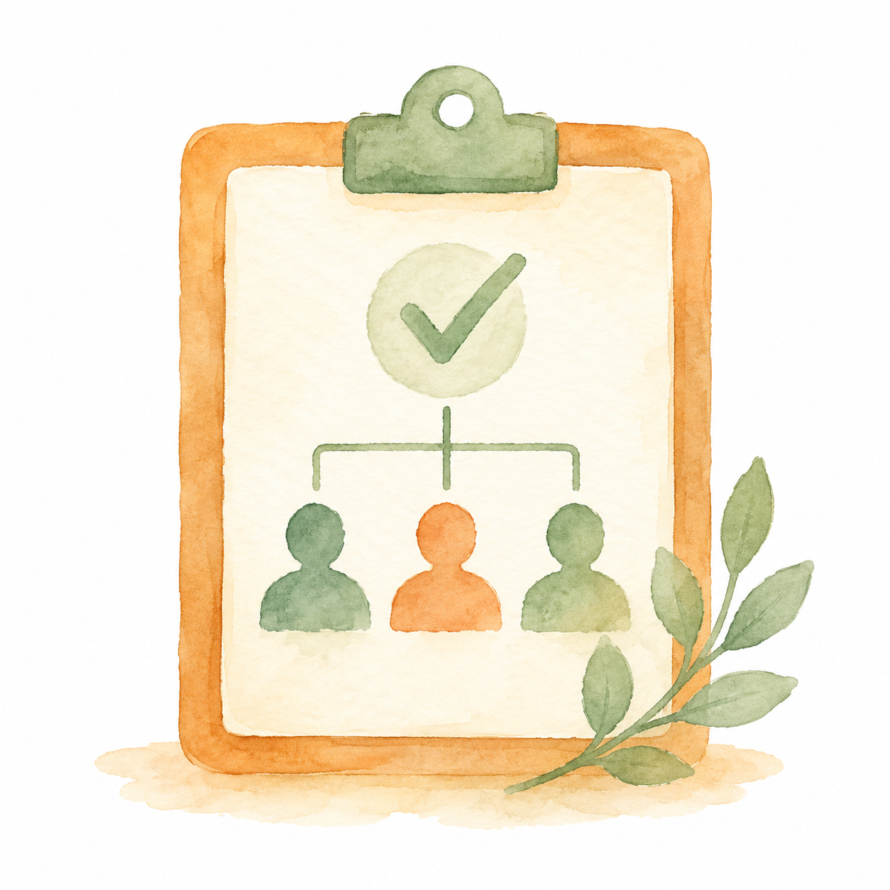
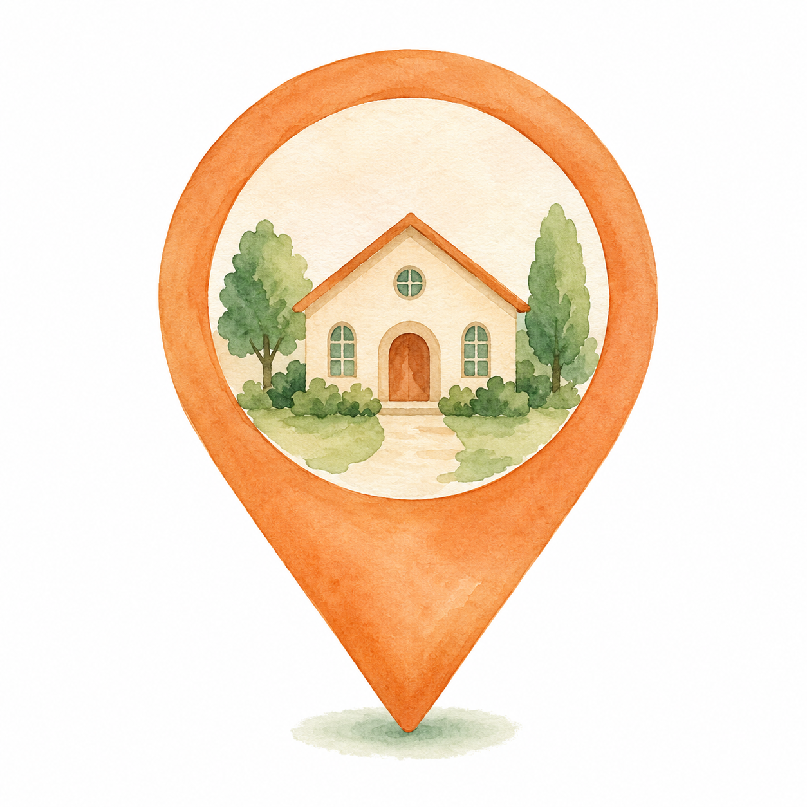
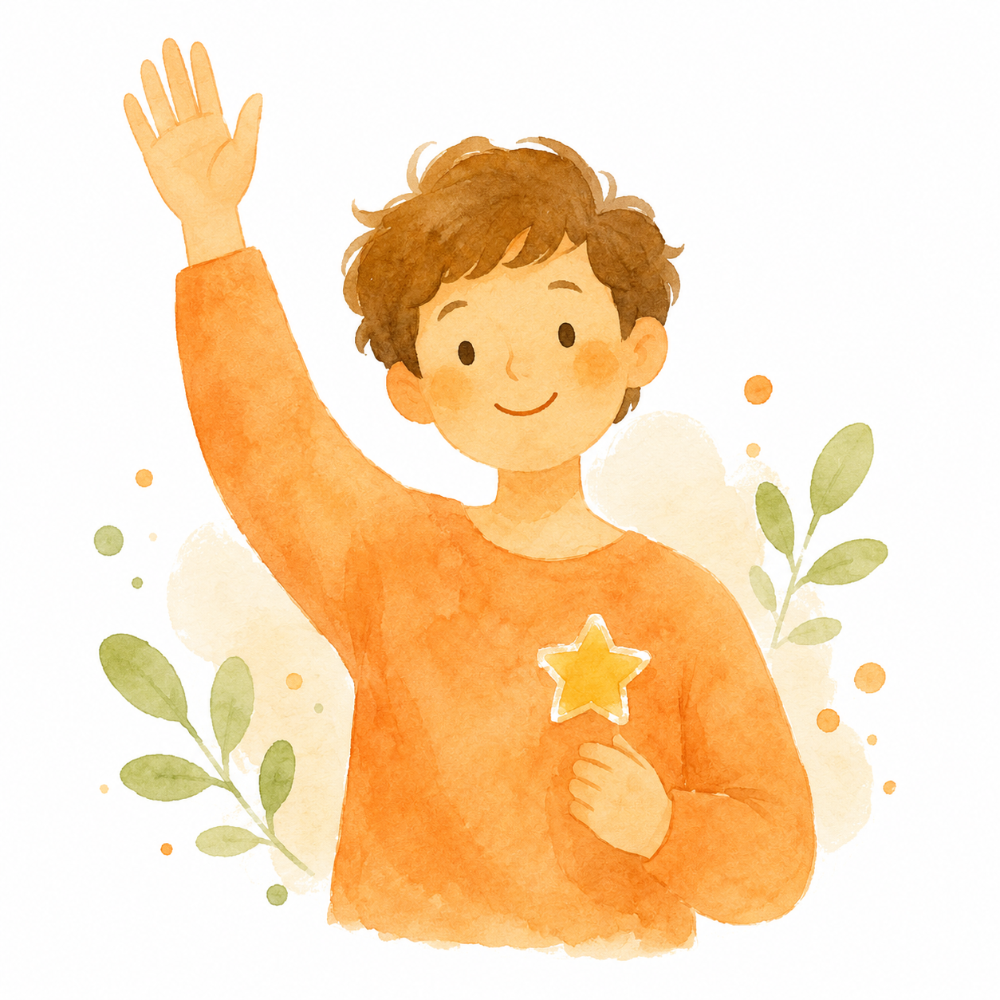
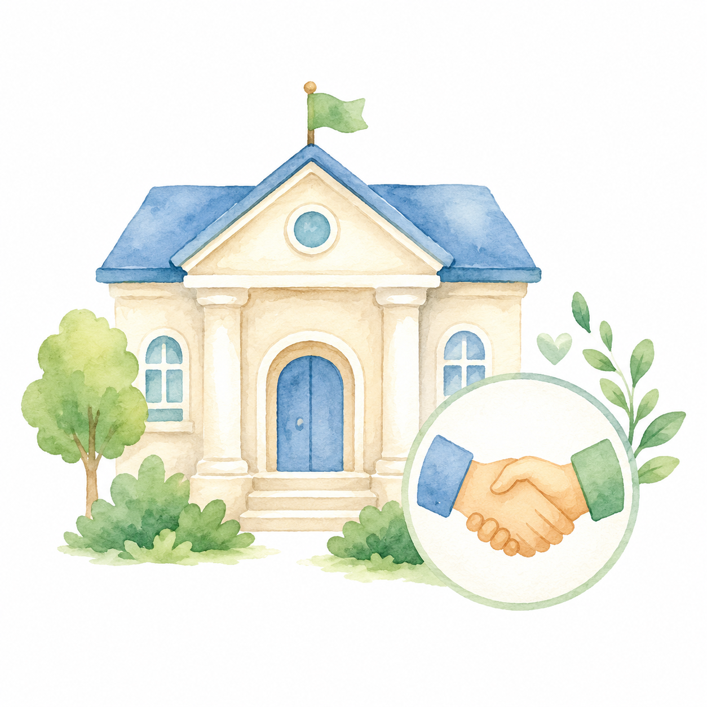
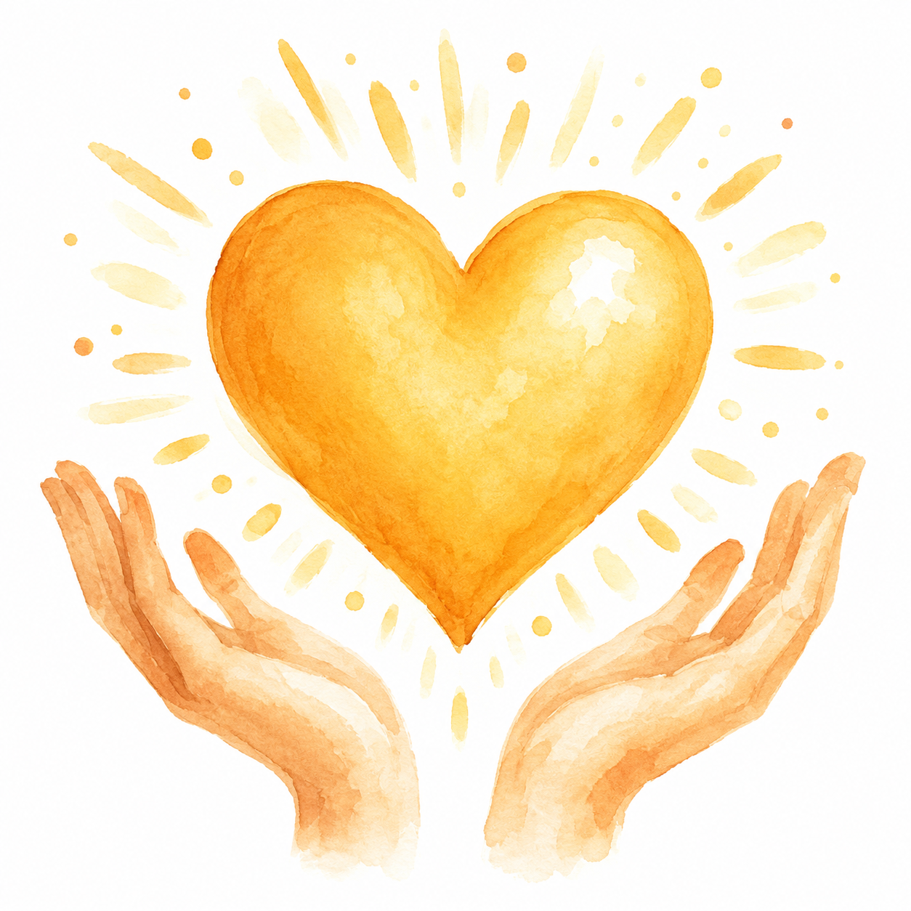

Rencontres
Échanger et partager mes expériences.

Ateliers
Participer à mes ateliers collaboratifs.

Ressources numériques
Guides, outils et conseils en ligne.
Micro Solidaire Network est un projet ambitieux pour créer une association loi 1901 autour de Libourne (Gironde), ouverte aux micro-entrepreneur·e·s. Ma vision : rompre l'isolement des travailleur·se·s indépendant·e·s et bâtir ensemble un réseau d'entraide concret.
Je crois que la réussite individuelle passe par la coopération. Les contributeurs du projet partagent leurs expériences, leurs outils, leurs bonnes pratiques — et s'accompagnent mutuellement dans le développement économique et le bien-être entrepreneurial.
Je veux aussi bâtir ce réseau sur des outils numériques responsables et des IA éthiques : des solutions ouvertes, respectueuses de la vie privée et économes en ressources. L'intelligence artificielle peut alléger les tâches répétitives et nous libérer du temps — tant qu'elle reste un outil au service des personnes, et jamais un substitut à l'entraide humaine.
Soutenir le projet
Un réseau de pairs bienveillant·e, non élitiste

Des outils choisis pour leur éthique et leur sobriété
L'intelligence artificielle au service des humains
Prévention des risques psychosociaux des indépendant·e·s
Échanger et partager mes expériences.

Participer à mes ateliers collaboratifs.
Guides, outils et conseils en ligne.
Pour que Micro Solidaire Network décolle, j'ai besoin de soutien sur deux fronts essentiels.

Il me manque 2 personnes pour former un bureau opérationnel. Je cherche des profils complémentaires, motivé·e·s par le projet et disponible·s pour s'engager auprès de moi.

J'ai besoin d'un espace physique à Libourne ou environs : lieu de rencontre, d'ateliers et de coordination. L'espace peut être partagé ou subsidié, je suis ouvert·e à toute proposition.
Que vous soyez micro-entrepreneur·e, structure engagé·e ou simplement passionné·e par ma vision, il y a un moyen pour vous de contribuer au projet.

Micro-entrepreneur·e, indépendant·e ou porteur·se de projet. Participez aux échanges, ateliers et tests de fonctionnalités.

Collectivité, réseau ou entreprise engagé·e. Collaborez au développement de l'écosystème solidaire.

Soutien financier, logistique ou en compétences. Votre contribution aide directement à concrétiser le projet.
Une question, une envie de soutenir le projet, une proposition de partenariat ? Écrivez-moi — je réponds sous 48h.
📍 Autour de Libourne (Gironde)
🌐 Projet en développement